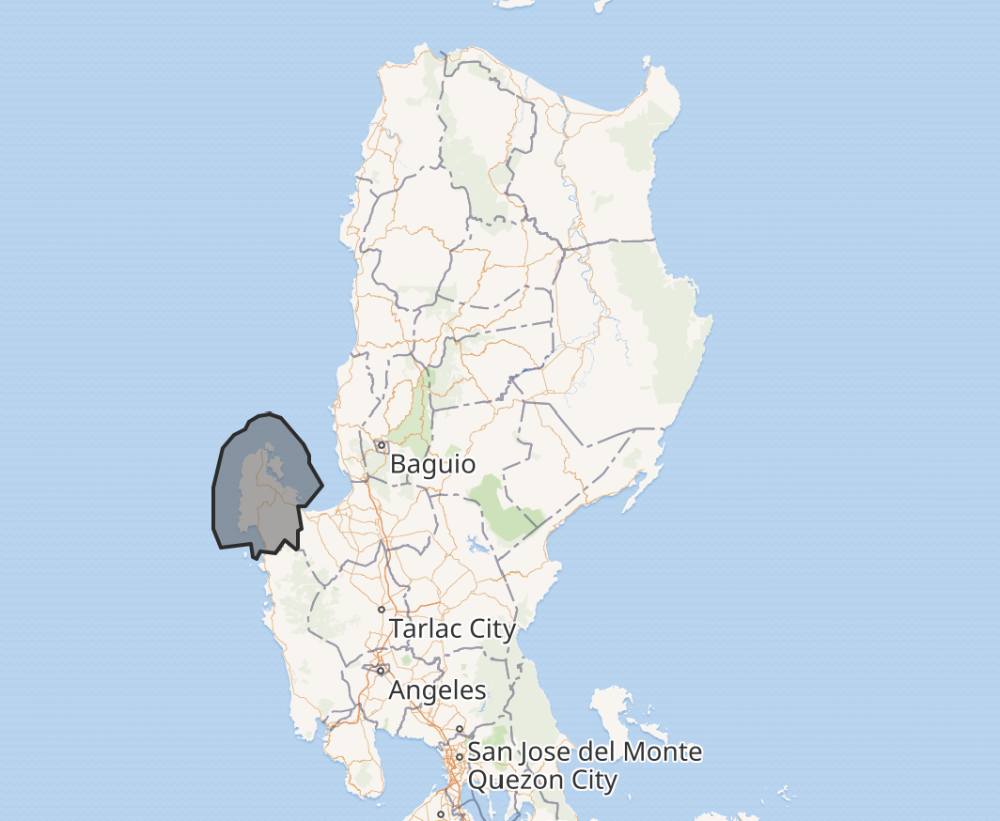
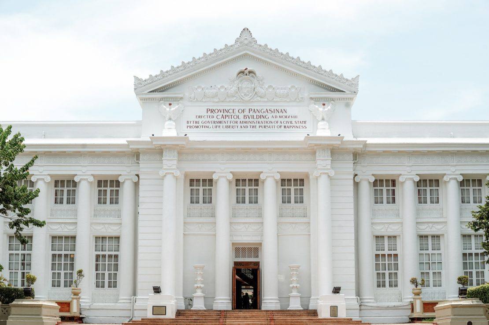
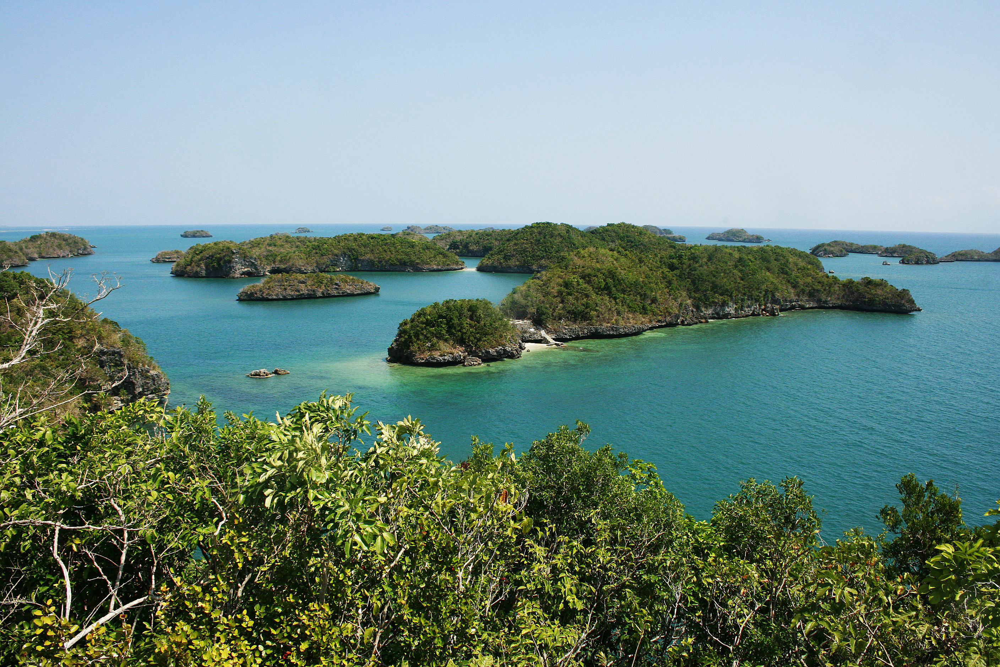
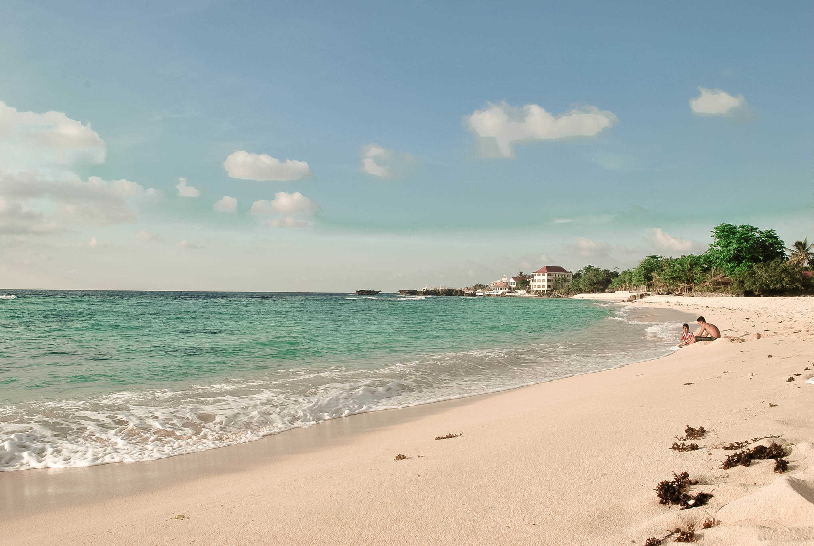
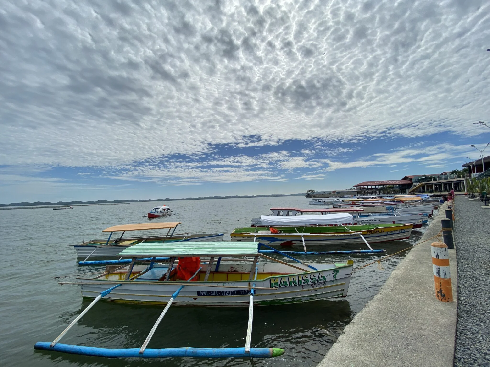
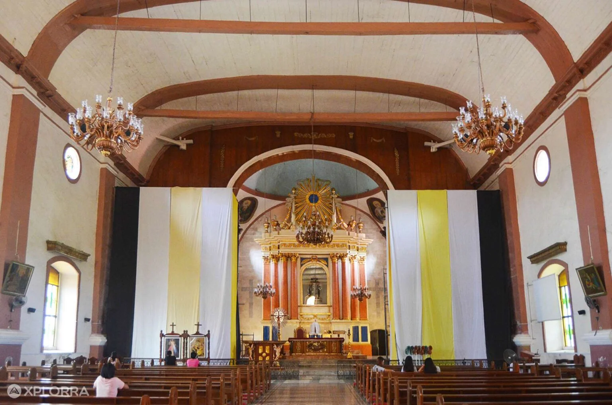
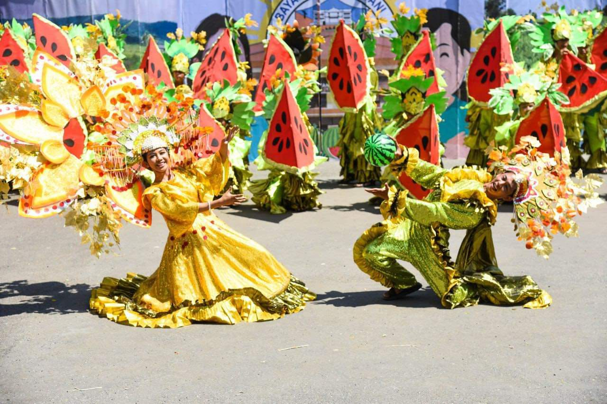

Location

Pangasinan is located in the western part of Luzon, Philippines, facing the West Philippine Sea. It is bordered by La Union, Benguet, Nueva Vizcaya, and Tarlac. Its strategic coastal location makes it a major hub for fishing, tourism, and trade in Northern Luzon.
Background & History

The name “Pangasinan” comes from the word asin (salt), reflecting its long history as a center of salt production. Before Spanish colonization, Pangasinan was already a thriving trading area with strong connections to neighboring regions.
During the Spanish period, the province became an important center of religion and governance. It later played a key role in World War II, especially during the historic landings in Lingayen Gulf. Today, Pangasinan continues to grow as a vibrant province rich in history and development.
Known Attractions





- Hundred Islands National Park – A world-famous destination featuring more than 100 limestone islands scattered across turquoise waters, ideal for island hopping, snorkeling, kayaking, and scenic boat tours.
- Bolinao White Beach – A world-famous destination featuring more than 100 limestone islands scattered across turquoise waters, ideal for island hopping, snorkeling, kayaking, and scenic boat tours.
- Anda Blue Lagoon – A hidden gem with crystal-clear blue waters and natural rock formations, perfect for swimming, cliff views, and peaceful nature escapes away from crowded tourist areas.
- Lucap Wharf – The main jump-off point to Hundred Islands, where tourists board boats, arrange island tours, and experience local coastal life.
- Minor Basilica of Our Lady of Manaoag – One of the most important pilgrimage sites in the Philippines, known for its miraculous image of the Virgin Mary and attracting thousands of devotees each year.
Culture & Traditions

Pangasinan’s culture is deeply rooted in its connection to the sea, agriculture, and faith. Festivals like Bangus Festival and Pista’y Dayat celebrate local livelihood and traditions.
Traditional crafts such as Abel weaving highlight the creativity and skill of local artisans,while music like “Malinac Lay Labi” reflects the province’s rich artistic heritage.
Why Visit Pangasinan?
Natural Beauty
Beaches, islands, and scenic landscapes perfect for relaxation and adventure.
Rich Culture
Experience festivals, traditions, and local craftsmanship.
Unique Food
Enjoy authentic Pangasinan delicacies and flavors.